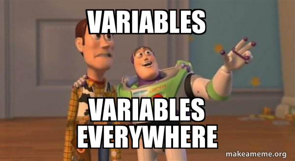

01 Les variables⚓︎

Écrire un programme, c'est traiter des données. Le plus souvent numériques (entiers ou décimaux) en cours de Mathématiques ou de Physique-Chimie, elles peuvent être aussi d'autres types: chaîne de caractères (texte), booléens (vrai/faux), ...
Pour stocker, manipuler et modifier ces données au fil du programme, on crée des variables qui vont permettre de les nommer ces données et d'y avoir accès simplement.
1. Affectation⚓︎
Admettons qu'on souhaite programmer un jeu de combat de Pokémons (ou tout autre personnage). Dans ce programme il faudra prendre en compte de nombreux attributs des Pokémons, par exemple les points de vie (PV). Pour chaque Pokémon, ces PV sont assez évidemment amenés à varier tout au long de l'exécution du programme. Le programmeur ne peut donc pas connaître la valeur de ces PV pendant le programme. Il lui faut manipuler une variable, c'est à dire un nom associé à cette valeur, qui elle est stockée en mémoire.
Notion de variable
-
Une variable est une association entre un nom et une valeur.
-
Associer une valeur à une variable (nouvelle ou déjà créé) s'appelle une affectation.
Par exemple, si mon Pokémon a 80 points de vie en début de partie, je peux créer une variable en affectant la valeur 80 au nom pv.
En Python, on écrira:
pv = 80
Vocabulaire
-
Par abus de langage, on confond souvent variable et nom de variable. Ici on parlera de la variable
pv. -
La première fois qu'on affecte une valeur à une variable, on dit qu'on l'initialise.
Attention
- Le symbole
=n'a rien à voir avec le symbole = utilisé en mathématiques. - On commence toujours à gauche par la variable à affecter, cette instruction n'est pas symétrique. On obtiendrait une erreur (essayez) avec:
80 = pv - En effet cette instruction est lue par Python de droite à gauche : on met la valeur
80dans la variablepv. En langage naturel dans un algorithme, on écrirait :pv ← 80. C'est ainsi qu'il faut se le représenter mentalement.

On peut se représenter cette affectation par une métaphore, où l'on représente la mémoire de l'ordinateur comme une gigantesque commode avec d'innombrables tiroirs.
Étape 1: Lorsqu'on affecte la valeur 80 à la variable pv, l'ordinateur commence par trouver un tiroir vide.
Étape 2: Ensuite il nomme ce tiroir pv, comme s'il lui collait une étiquette dessus.
Étape 3: Enfin il dépose dans ce tiroir la valeur 80.
Désormais - tant qu'on ne lui aura pas affecté une autre valeur - chaque fois qu'on utilisera la variable pv dans notre programme, l'ordinateur utilisera la valeur 80.
Si on affecte une nouvelle valeur à la variable pv, alors l'ancienne disparaît (on dit qu'elle est écrasée).
Attention
Dans un programme, toute valeur qu'on souhaite réutiliser doit être affectée à une variable. Par exemple, à la fin du programme suivant:
1 2 3 4 | |
La variable score_j1 contient 100, et la variable score_j2 contient toujours 0, car le résultat du calcul ligne 4 n'a pas été mémorisé... S'il n'est pas affecté à une variable, il est perdu.
2. Expressions et évaluation⚓︎
Regardons l'exemple suivant:
>>> a = 2
>>> a = 4
>>> a
4
>>> b = a + 3
>>> b
7
>>> b = c + 1
Traceback (most recent call last):
File "<pyshell>", line 1, in <module>
NameError: name 'c' is not defined
>>>
Analyse ligne par ligne
On initialise la variable a à 2.
On réaffecte une nouvelle valeur, 4, à la variable a.
On demande la valeur associée à a. Python répond logiquement 4: la valeur 2 a été écrasée.
On crée une nouvelle variable b à laquelle on affecte a + 3. Ceci est une expression, Python doit au préalable l'évaluer avant de l'affecter. Dans l'ordre:
- Python lit d'abord le membre de droite
a + 3. - Il récupère la valeur stockée dans
a, c'est-à-dire4. - Il évalue ensuite l'expression, ici il fait une addition :
4 + 3. - Il affecte à
bla somme obtenue, c'est-à-dire7. On le vérifie aux lignes 6 et 7.
On réaffecte à b le résultat de l'expression c + 1. Or aucune variable nommée c n'a été déclarée : on obtient une erreur, puisque Python n'a pas de valeur associée à c.
3. Types de variables⚓︎
Pour l'instant, les variables que nous avons manipulées contiennent toutes des nombres entiers.
Mais imaginons un programme qui doive manipuler les noms des Pokemons... Ce ne seront plus des nombres, mais des mots chaînes de caractères.
Pour différencier la nature de ce que peut contenir une variable, on parle alors de type de variable.
En voici quelques uns, que nous découvrirons au fil de l'année :
Types de base
Voici les types Python utilisés cette année:
| Type Python | Traduction | Exemple |
|---|---|---|
int |
entier | 42 |
float |
flottant (décimal) | 3.1416 |
str |
chaîne de caractères (string) | "Maths" |
bool |
booléen (True ou False) | True |
function |
fonction | print |
Connaître le type d'une variable
Il suffit dans la console d'utiliser la fonction type.
>>> a = 1
>>> type(a)
<class 'int'>
>>> type(toto)
???
En cas d'erreur
Une chaîne de caractères s'écrit avec des guillemets. Sans, Python l'interprète comme une variable...